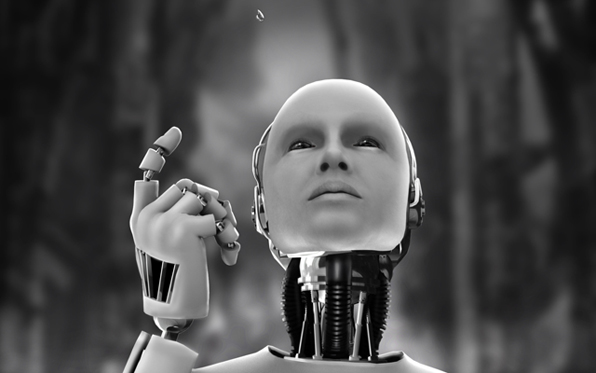

Artificial consciousness, also known as machine consciousness (MC) or synthetic consciousness, is a field related to artificial intelligence and cognitive robotics. The aim of the theory of artificial consciousness is to "Define that which would have to be synthesized were consciousness to be found in an engineered artifact" (Aleksander 1995).
Neuroscience hypothesizes that consciousness is generated by the interoperation of various parts of the brain, called the neural correlates of consciousness or NCC, though there are challenges to that perspective. Proponents of AC believe it is possible to construct systems (e.g., computer systems) that can emulate this NCC interoperation.
Philosophical views
As there are many hypothesized types of consciousness, there are many potential implementations of artificial consciousness. In the philosophical literature, perhaps the most common taxonomy of consciousness is into "access" and "phenomenal" variants. Access consciousness concerns those aspects of experience that can be apprehended, while phenomenal consciousness concerns those aspects of experience that seemingly cannot be apprehended, instead being characterized qualitatively in terms of "raw feels", "what it is like" or qualia (Block 1997).
